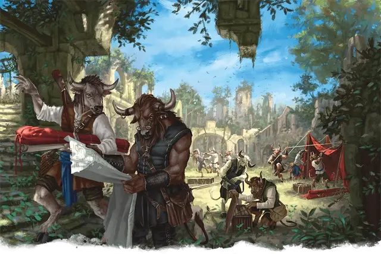

Минотавр археолог
Minotaur Archaeologist
Средний Гуманоид, любое мировоззрение

Класс Доспеха 11 (природный доспех)
Хиты 18 (4к8)
Скорость 30 футов
| мод | спас | ||
|---|---|---|---|
| СИЛ | 12 | +1 | +1 |
| ЛОВ | 10 | +0 | +0 |
| ТЕЛ | 11 | +0 | +0 |
| мод | спас | ||
|---|---|---|---|
| ИНТ | 13 | +1 | +1 |
| МДР | 12 | +1 | +1 |
| ХАР | 10 | +0 | +0 |
Навыки Восприятие +5, История +5, Магия +3, Религия +3
Чувства пассивное Восприятие 15
Языки Общий
Опасность 1/4 (50 опыта)
Бонус мастерства +2
Особенности
Запоминание лабиринта. Минотавр может с лёгкостью вспомнить любой пройдённый путь.
Действия
Бодание. Рукопашная атака оружием: +3 к попаданию, досягаемость 5 футов, одна цель. Попадание: 4 (1к6 + 1) колющего урона. Если минотавр переместится как минимум на 10 футов по прямой к существу, а затем в том же ходу попадет по нему атакой, эта цель дополнительно получает 3 (1к6) колющего урона и если цель Большого размера или меньше, она должна преуспеть в спасброске Силы Сл 11, иначе оттолкнётся от минотавра на 10 футов и упадёт ничком.